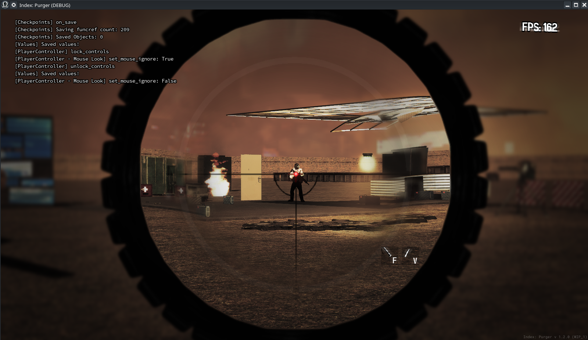

Module: viewmodel
Documentation last edited: October 23, 2025 at 14:33 UTC
Description
Viewmodel is a special type of models that are displayed in first-person view and usually represent either weapons or medical items. Besides loading of the model it provides a lot of interesting features like procedural animation, particle effects, left-hand animations, in-sight animations, etc.

Script Structure
.
├── animation_set.gd
├── animation_sets
│ ├── assault_rifle.gd
│ ├── generic.gd
│ ├── grenade.gd
│ ├── melee.gd
│ └── pump_shotgun.gd
├── autoload
│ └── viewmodel_sight_2D.gd
├── configs
│ ├── animation_event_data.gd
│ └── config.gd
├── helpers
│ ├── animation_key_methods.gd
│ ├── remove_object_in_seconds.gd
│ ├── remove_sound_after_seconds.gd
│ └── weapon_casing_logic.gd
├── model_instance.gd
├── preloader.gd
├── procedural_animation.gd
└── viewmodel.gd
Viewmodel
"./viewmodel.gd"
This is the main file here, the one that provides an API to use with the entire system. It acts as the bridge between gameplay code and the underlying weapon system, managing the complete lifecycle of weapon (or any first-person) models, animations, and visual effects.
- Handles complete weapon setup.
- Provides high-level animation playback (draw, hide, shoot, reload).
- Manages frame-perfect animation callbacks and triggers.
- Provides high-level functions to work with.
- Uses
ViewmodelModelInstance
to initialize the model.
- Uses
ViewmodelProceduralAnimation
to coordinate the procedural animations.
Example
# Initialize viewmodel
viewmodel = Viewmodel.new()
viewmodel.load_weapon(
weapon_anim_class, main_node, player, camera_transform_manager)
animation_set = viewmodel.get_animation_set_controller()
# Connect animation events
viewmodel.add_animation_event_callback(
hide_enough_event, funcref(self, "hide_enough")
)
viewmodel.add_animation_event_callback(
take_enough_event, funcref(self, "take_enough")
)
viewmodel.add_animation_event_callback(
shoot_event, funcref(self, "on_shoot")
)
# CHanging hands
viewmodel.change_hands(LoadoutSystem.get_viewmodel_hands())
# Initialize weapon state
animation_set.hide()
viewmodel.anim_player.advance(10000.0)
viewmodel.stop_all_sounds()
# Taking
animation_set.take()
# Playing some other animation
viewmodel.play_animation("look")
# Shooting
animation_set.shoot()
Viewmodel Model Instance
"./model_instance.gd"
Loads and positions weapon models in first-person view. Manages weapon skeletons for animations and attachments. Creates and maintains the complex node structure for viewmodel rendering. In other words, simply initializes all that node mess.
- Initializes the model.
- Creates and manages attachment points for effects (muzzle flash, casing ejection).
- Handles bone poses, transforms, and animation blending.
- Positions weapon relative to camera bone for proper first-person perspective.
- Manages muzzle flashes, shell ejection effects, and other weapon particles.
- Controls muzzle flash lights with color fading.
- Implements performance-optimized pools for particles and physics objects.
- Converts standard materials to viewmodel shader materials.
- Applies correct field-of-view settings to all visual elements.
- Prevents weapon clipping through geometry.
- Configures proper render layers for first-person weapons.
Viewmodel Procedural Animation
"./procedural_animation.gd"
It creates the organic weapon movement that responds to player actions, environmental factors, and physics - making weapons feel physical and responsive rather than static and robotic.
- Natural sway and bounce synchronized with player movement.
- Mouse-driven weapon rotation and position shifts.
- Smooth blending between different movement states.
- Running, walking, crouching, slow walking animations.
- Weapon tilt and position changes during jumps and falls.
- Smooth transitions between hip fire and aim-down-sights.
- Automatic weapon pushback when near walls/objects.
Autoload:
ViewmodelPreloader
This autoload allows to preload viewmodel GLTF models for easier asset management and optimization.
- Dynamic loading and caching of 3D weapon models.
- Separate hand model system with quality variants.
- Efficient loading/unloading of weapon assets.
- Control of left-hand animations to make them shared across multiple viewmodels.
Example
# Left hand animation control
ViewmodelPreloader.play_left_animation("grenade_throw")
ViewmodelPreloader.stop_left_animation()
# Standard weapon loading pattern
var model = ViewmodelPreloader.create_model("assault_rifle", parent_node)
var hands = ViewmodelPreloader.get_hands("male_hands")
Autoload:
ViewmodelSight2D

2D scope implementation for viewmodels used by BSR-10 at the moment.
Example
ViewmodelSight2D.show()
ViewmodelSight2D.hide()
ViewmodelSight2D.set_offset(13, 37)
Exporting your own viewmodel


0. Make sure hierarchy is correct.
- As well as you are using correct hands rig from
"res://.dev_sources/viewmodels/"
.
1. Make sure you have appropriately named actions.
2. Press
"Export Player Weapon Viewmodel"
.
3. Tada.
For more examples just examine .blend files at
"res://.dev_sources/viewmodels/"
.
General Information
Root directories list
assets, docs, src
Nodes
ViewmodelSight2D
weapon_casing_logic
remove_sound_after_seconds
ViewmodelAnimationKeyMethods
remove_object_in_seconds
ViewmodelPreloader
Classes
ViewmodelModelInstance
ViewmodelAnimationSet
Viewmodel
generic
grenade
pump_shotgun
melee
assault_rifle
ViewmodelProceduralAnimation
Resources
ViewmodelAnimationEventData
ViewmodelConfig
Other Scripts
None